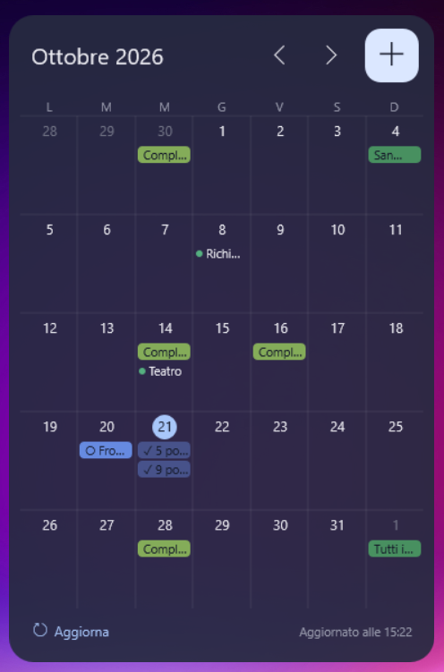

Rainmeter Calendar è un widget personale per Rainmeter su Windows. Mostra la vista mensile degli eventi di Google Calendar e delle attività di Google Tasks dell'utente, e permette di crearli, completarli ed eliminarli direttamente dal desktop.
Il widget funziona interamente sul computer dell'utente. Comunica solo con le API ufficiali di Google, usando un token di accesso salvato cifrato su quel computer. Non ci sono server né terze parti coinvolte.

Codice e guida all'installazione · Informativa privacy · English